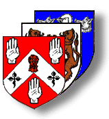

 |  |
This way to The Cullen Family DNA Project
| Links to the Site Areas »» |
|
Upton, Nottinghamshire: The main focus of this website is a small rustic village in the English Midlands where many related Cullen family lines originated. With the help of many people, I believe our pages on Upton-By-Southwell and its families are the best introduction to be found anywhere. |
|
What's New? : A list of site updates and the latest postings are on a separate page. Click here to read what's new at the Cullen Genealogy Homepage.
ATTENTION! : A lot of the external links on this website are now out of date, and aren't active anymore. You might be able to view the sites still with the Wayback Machine.
Overview of The Cullen Genealogy Homepage
To begin with, I have broken the site into natural divisions of the family in order to keep site navigation as simple as possible while still allowing for the inclusion of future data. Hopefully this will cut down on cluttered pages. The use of client side image mapping requires that you have (at least) Netscape 2.x or Internet Explorer 3.x as your browser to properly view the family data. Although the site has been designed to be accessible at any color depth and any resolution, it is recommended that you use true color (24-bit) and 800 X 600 resolution.
Maternal surnames for my family are: GOODWIN, JAMES, HOUGHTON (or HORTON), GRATRIX (or GREATRIX), MILLWARD. Other related surnames: COONROD, PELTON, PERRIN, HUSTON. Locations relevant to to my family lines are: Erie Co., Ohio, USA; Grantham and Great Hale parishes, Lincolnshire, England; Upton by Southwell, Nottinghamshire, England.
- Cullen Surname Origins: A page dedicated to the various origins attributed to the surname Cullen. No genealogy site would be complete without it! Many thanks to Jim Roache for his efforts on this subject.
- Main Genealogy Page: The Cullen family tree is the starting point for the genealogical information contained in the site. From there you can branch off to even more information on the related family lines. Another thank-you goes out to Jim Perrin, who inspired the idea for a 'clickable' descendancy chart.
- Cullen Records Archive: A growing collection of reference material pertaining to Cullen genealogical research. Also various Cullen Family Histories. If you can help this page grow more, please contact me!
- Posting Pages: Link here for more Cullen information provided by many other individuals doing research on the name. If you are able to help any of them, don't hesitate to contact them. If you are searching for missing Cullens in your family tree then this page is for you! E-mail me with your query and I'll post it.
- Site Map: A clickable image map that outlines and links the contents of the entire website. There is also a search engine for this site, compliments of Hotbot, the Internet's #1 rated search engine.
- Genealogy Links: Sites that I have found to be useful for online research. There are also links to Homepages owned by Cullens and links to other interesting places.
- Awards Page: I'm very picky about the awards I submit for so there's only a choice few. So far we're doing just great!
..SINCE
....1996
 |
 |
 |
Site URL is https://jcullen88.github.io/CullenGenealogyHomepage/
Please send questions or comments to jtCullen88@gmail.com
Credits and Licenses
Please be patient while site content and page coding is updated to modern standards.
Mtest